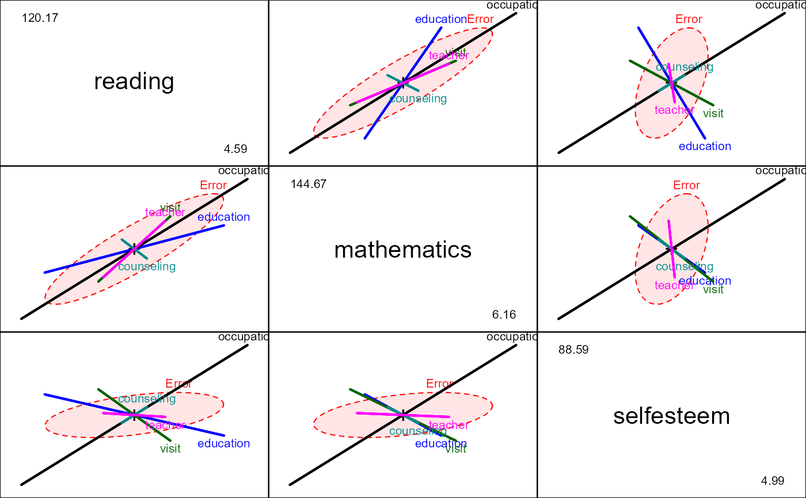
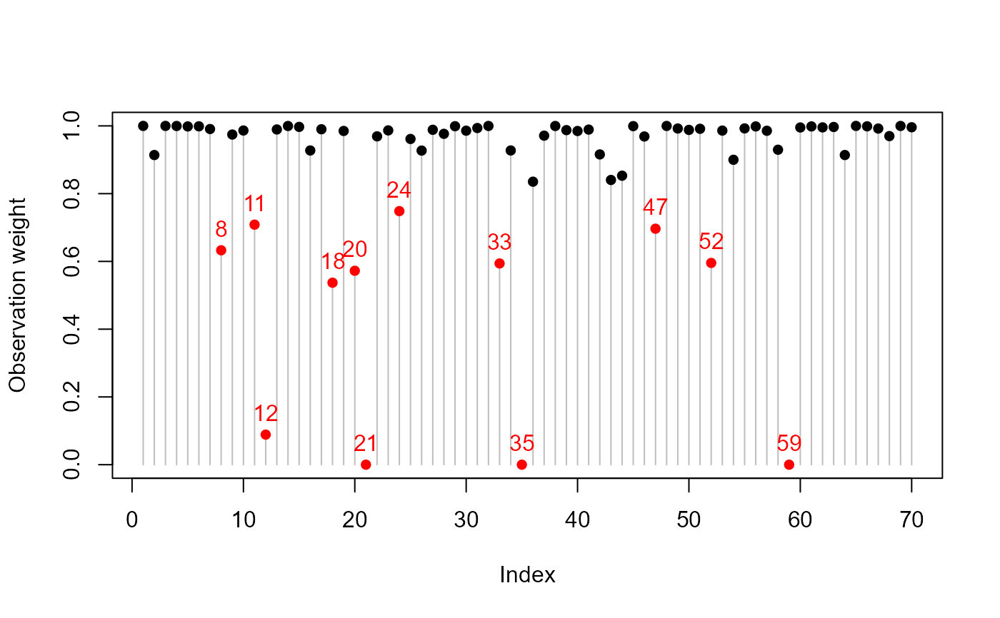
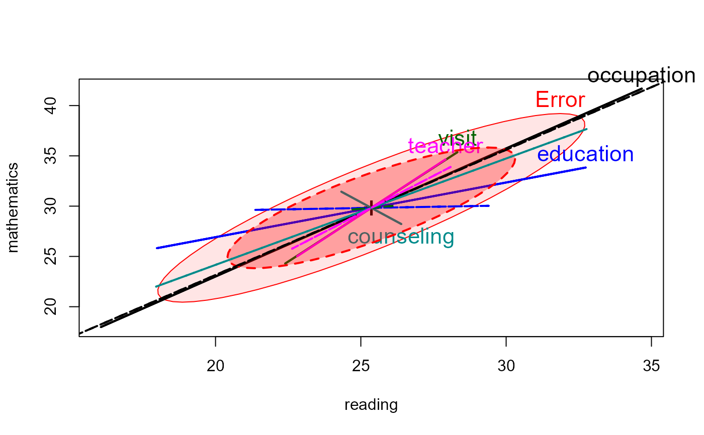

<!-- Generated by pkgdown: do not edit by hand -->
<!DOCTYPE html>
<html>
  <head>
  <meta charset="utf-8">
<meta http-equiv="X-UA-Compatible" content="IE=edge">
<meta name="viewport" content="width=device-width, initial-scale=1.0">

<title>School Data — schooldata • heplots</title>

<!-- jquery -->
<script src="https://code.jquery.com/jquery-3.1.0.min.js" integrity="sha384-nrOSfDHtoPMzJHjVTdCopGqIqeYETSXhZDFyniQ8ZHcVy08QesyHcnOUpMpqnmWq" crossorigin="anonymous"></script>
<!-- Bootstrap -->
<link href="https://maxcdn.bootstrapcdn.com/bootswatch/3.3.7/cerulean/bootstrap.min.css" rel="stylesheet" crossorigin="anonymous">

<script src="https://maxcdn.bootstrapcdn.com/bootstrap/3.3.7/js/bootstrap.min.js" integrity="sha384-Tc5IQib027qvyjSMfHjOMaLkfuWVxZxUPnCJA7l2mCWNIpG9mGCD8wGNIcPD7Txa" crossorigin="anonymous"></script>

<!-- Font Awesome icons -->
<link href="https://maxcdn.bootstrapcdn.com/font-awesome/4.6.3/css/font-awesome.min.css" rel="stylesheet" integrity="sha384-T8Gy5hrqNKT+hzMclPo118YTQO6cYprQmhrYwIiQ/3axmI1hQomh7Ud2hPOy8SP1" crossorigin="anonymous">


<!-- pkgdown -->
<link href="../pkgdown.css" rel="stylesheet">
<script src="../jquery.sticky-kit.min.js"></script>
<script src="../pkgdown.js"></script>
  
  
<!-- mathjax -->
<script src='https://mathjax.rstudio.com/latest/MathJax.js?config=TeX-AMS-MML_HTMLorMML'></script>

<!--[if lt IE 9]>
<script src="https://oss.maxcdn.com/html5shiv/3.7.3/html5shiv.min.js"></script>
<script src="https://oss.maxcdn.com/respond/1.4.2/respond.min.js"></script>
<![endif]-->


  </head>

  <body>
    <div class="container template-reference-topic">
      <header>
      <div class="navbar navbar-default navbar-fixed-top" role="navigation">
  <div class="container">
    <div class="navbar-header">
      <button type="button" class="navbar-toggle collapsed" data-toggle="collapse" data-target="#navbar">
        <span class="icon-bar"></span>
        <span class="icon-bar"></span>
        <span class="icon-bar"></span>
      </button>
      <a class="navbar-brand" href="../index.html">heplots</a>
    </div>
    <div id="navbar" class="navbar-collapse collapse">
      <ul class="nav navbar-nav">
        <li>
  <a href="../index.html">
    <span class="fa fa-home fa-lg"></span>
     
  </a>
</li>
<li>
  <a href="../reference/index.html">Reference</a>
</li>
      </ul>
      
      <ul class="nav navbar-nav navbar-right">
        
      </ul>
    </div><!--/.nav-collapse -->
  </div><!--/.container -->
</div><!--/.navbar -->

      
      </header>

      <div class="row">
  <div class="col-md-9 contents">
    <div class="page-header">
    <h1>School Data</h1>
    </div>

    
    <p>School Data, from Charnes et al. (1981). The aim is to explain scores on 3 
different tests, <code>reading</code>, <code>mathematics</code> and <code>selfesteem</code>
from 70 school sites by means of 5 explanatory variables.</p>
    

    <pre class="usage"><span class='fu'>data</span>(<span class='no'>schooldata</span>)</pre>
        
    <h2 class="hasAnchor" id="format"><a class="anchor" href="#format"></a>Format</h2>

    <p>A data frame with 70 observations on the following 8 variables.</p><dl class='dl-horizontal'>
<dt><code>education</code></dt><dd><p>education level of mother as measured in terms of percentage of high school 
graduates among female parents</p></dd>
<dt><code>occupation</code></dt><dd><p>highest occupation of a family member according to a pre-arranged rating scale</p></dd>
<dt><code>visit</code></dt><dd><p>parental visits index representing the number of visits to the school site</p></dd>
<dt><code>counseling</code></dt><dd><p>parent counseling index calculated from data on time spent with child on 
school-related topics such as reading together, etc.</p></dd>
<dt><code>teacher</code></dt><dd><p>number of teachers at a given site</p></dd>
<dt><code>reading</code></dt><dd><p>total reading score as measured by the Metropolitan Achievement Test</p></dd>
<dt><code>mathematics</code></dt><dd><p>total mathematics score as measured by the Metropolitan Achievement Test</p></dd>
<dt><code>selfesteem</code></dt><dd><p>Coopersmith Self-Esteem Inventory, intended as a measure of self-esteem</p></dd>
</dl>
    
    <h2 class="hasAnchor" id="details"><a class="anchor" href="#details"></a>Details</h2>

    <p>This dataset was shamelessly borrowed from the <code>FRB</code> package.</p>
<p>The relationships among these variables are unusual, a fact only revealed by plotting.</p>
    
    <h2 class="hasAnchor" id="source"><a class="anchor" href="#source"></a>Source</h2>

    <p>A. Charnes, W.W. Cooper and E. Rhodes (1981). Evaluating Program and Managerial Efficiency: An Application of Data
Envelopment Analysis to Program Follow Through. <em>Management Science</em>, <b>27</b>, 668-697.</p>
    

    <h2 class="hasAnchor" id="examples"><a class="anchor" href="#examples"></a>Examples</h2>
    <pre class="examples"><div class='input'><span class='fu'>data</span>(<span class='no'>schooldata</span>)
<span class='co'># initial screening</span>
<span class='fu'>plot</span>(<span class='no'>schooldata</span>)</div><div class='img'></div><div class='input'>
<span class='co'># better plot</span>
<span class='fu'>library</span>(<span class='no'>corrgram</span>)
<span class='fu'><a href='http://www.rdocumentation.org/packages/corrgram/topics/corrgram'>corrgram</a></span>(<span class='no'>schooldata</span>, <span class='kw'>lower.panel</span><span class='kw'>=</span><span class='no'>panel.ellipse</span>, <span class='kw'>upper.panel</span><span class='kw'>=</span><span class='no'>panel.pts</span>)</div><div class='img'></div><div class='input'>
<span class='co'>#fit the MMreg model</span>
<span class='no'>school.mod</span> <span class='kw'>&lt;-</span> <span class='fu'>lm</span>(<span class='fu'>cbind</span>(<span class='no'>reading</span>, <span class='no'>mathematics</span>, <span class='no'>selfesteem</span>) ~
                <span class='no'>education</span> + <span class='no'>occupation</span> + <span class='no'>visit</span> + <span class='no'>counseling</span> + <span class='no'>teacher</span>, <span class='kw'>data</span><span class='kw'>=</span><span class='no'>schooldata</span>)
<span class='co'># shorthand</span>
<span class='no'>school.mod</span> <span class='kw'>&lt;-</span> <span class='fu'>lm</span>(<span class='fu'>cbind</span>(<span class='no'>reading</span>, <span class='no'>mathematics</span>, <span class='no'>selfesteem</span>) ~ <span class='no'>.</span>, <span class='kw'>data</span><span class='kw'>=</span><span class='no'>schooldata</span>)
<span class='fu'>Anova</span>(<span class='no'>school.mod</span>)</div><div class='output co'>#&gt; 
#&gt; Type II MANOVA Tests: Pillai test statistic
#&gt;            Df test stat approx F num Df den Df    Pr(&gt;F)    
#&gt; education   1   0.37564  12.4337      3     62 1.820e-06 ***
#&gt; occupation  1   0.56658  27.0159      3     62 2.687e-11 ***
#&gt; visit       1   0.26032   7.2734      3     62 0.0002948 ***
#&gt; counseling  1   0.06465   1.4286      3     62 0.2429676    
#&gt; teacher     1   0.04906   1.0661      3     62 0.3700291    
#&gt; ---
#&gt; Signif. codes:  0 <U+0091>***<U+0092> 0.001 <U+0091>**<U+0092> 0.01 <U+0091>*<U+0092> 0.05 <U+0091>.<U+0092> 0.1 <U+0091> <U+0092> 1</div><div class='input'>
<span class='fu'><a href='heplot.html'>heplot</a></span>(<span class='no'>school.mod</span>)</div><div class='img'></div><div class='input'><span class='fu'><a href='heplot3d.html'>heplot3d</a></span>(<span class='no'>school.mod</span>)

<span class='co'># robust model, using robmlm()</span>
<span class='no'>school.rmod</span> <span class='kw'>&lt;-</span> <span class='fu'><a href='robmlm.html'>robmlm</a></span>(<span class='fu'>cbind</span>(<span class='no'>reading</span>, <span class='no'>mathematics</span>, <span class='no'>selfesteem</span>) ~ <span class='no'>.</span>, <span class='kw'>data</span><span class='kw'>=</span><span class='no'>schooldata</span>)
<span class='co'># note that counseling is now significant</span>
<span class='fu'>Anova</span>(<span class='no'>school.rmod</span>)</div><div class='output co'>#&gt; 
#&gt; Type II MANOVA Tests: Pillai test statistic
#&gt;            Df test stat approx F num Df den Df    Pr(&gt;F)    
#&gt; education   1   0.39455  12.8161      3     59 1.488e-06 ***
#&gt; occupation  1   0.59110  28.4301      3     59 1.683e-11 ***
#&gt; visit       1   0.23043   5.8888      3     59 0.0013819 ** 
#&gt; counseling  1   0.25257   6.6456      3     59 0.0006083 ***
#&gt; teacher     1   0.09812   2.1395      3     59 0.1048263    
#&gt; ---
#&gt; Signif. codes:  0 <U+0091>***<U+0092> 0.001 <U+0091>**<U+0092> 0.01 <U+0091>*<U+0092> 0.05 <U+0091>.<U+0092> 0.1 <U+0091> <U+0092> 1</div><div class='input'>
<span class='co'># compare classical HEplot with robust</span>
<span class='fu'><a href='heplot.html'>heplot</a></span>(<span class='no'>school.mod</span>, <span class='kw'>cex</span><span class='kw'>=</span><span class='fl'>1.4</span>, <span class='kw'>lty</span><span class='kw'>=</span><span class='fl'>1</span>, <span class='kw'>fill</span><span class='kw'>=</span><span class='fl'>TRUE</span>, <span class='kw'>fill.alpha</span><span class='kw'>=</span><span class='fl'>0.1</span>)</div><div class='input'><span class='fu'><a href='heplot.html'>heplot</a></span>(<span class='no'>school.rmod</span>, <span class='kw'>add</span><span class='kw'>=</span><span class='fl'>TRUE</span>, <span class='kw'>error.ellipse</span><span class='kw'>=</span><span class='fl'>TRUE</span>, <span class='kw'>lwd</span><span class='kw'>=</span><span class='fu'>c</span>(<span class='fl'>2</span>,<span class='fl'>2</span>), <span class='kw'>lty</span><span class='kw'>=</span><span class='fu'>c</span>(<span class='fl'>2</span>,<span class='fl'>2</span>),
        <span class='kw'>term.labels</span><span class='kw'>=</span><span class='fl'>FALSE</span>, <span class='kw'>err.label</span><span class='kw'>=</span><span class='st'>""</span>, <span class='kw'>fill</span><span class='kw'>=</span><span class='fl'>TRUE</span>)</div><div class='img'></div><div class='input'>

</div></pre>
  </div>
  <div class="col-md-3 hidden-xs hidden-sm" id="sidebar">
    <h2>Contents</h2>
    <ul class="nav nav-pills nav-stacked">
      
      <li><a href="#format">Format</a></li>

      <li><a href="#details">Details</a></li>

      <li><a href="#source">Source</a></li>
      
      <li><a href="#examples">Examples</a></li>
    </ul>

  </div>
</div>

      <footer>
      <div class="copyright">
  <p>Developed by John Fox, Michael Friendly.</p>
</div>

<div class="pkgdown">
  <p>Site built with <a href="http://hadley.github.io/pkgdown/">pkgdown</a>.</p>
</div>

      </footer>
   </div>

  </body>
</html>
